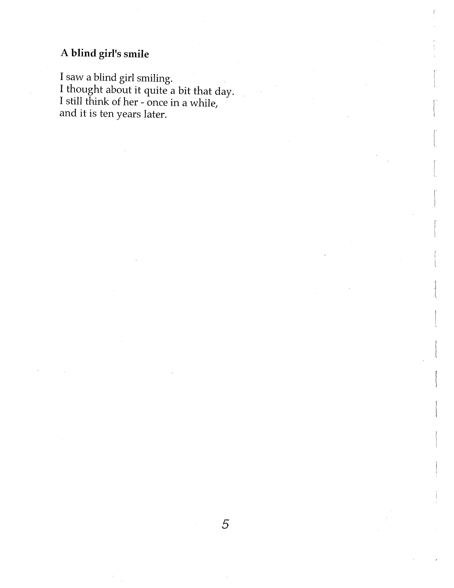

A blind girl's smile
I saw a blind girl smiling.
I thought about it quite a bit that day.
I still think of her - once in a while,
and it is ten years later.

Original page, Yokohama Rickshaw Boy, p. 5
Audio reading — not yet digitized.
Video — not yet digitized.
Read in another language: